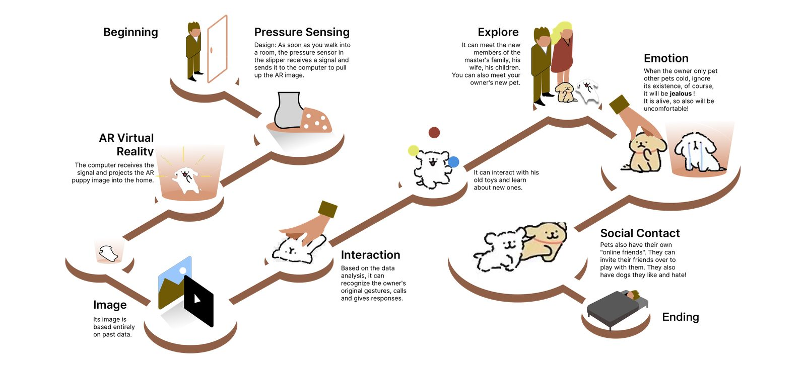

Pets die in the real world, but their data is preserved intact on the internet. Maybe they can get a second life there.
Pets die in the real world, but their data is preserved intact on the internet. Maybe pets can get a second life there.
A personal project — AR, interaction design, research, 3D modelling and visual design completed individually, with programming and hardware help from computer-science classmates.
It was inspired by a friend, Jane, whose dog Pupu passed away unexpectedly in August 2021. It was hard for her to accept sending Pupu to be cremated: "I want to see Pupu wake up, I want to take Pupu to my new house and introduce Pupu to you!"
That led me to ask: could an AR experience use a pet's appearance and personality data, combined with virtual-reality technology, to let them "survive" online — recognising old toys, meeting the owner's new pets or family members, even making new friends?
I designed an experience where, as soon as the owner gets home and puts on their slippers, a pressure sensor picks up the signal and the AR experience begins. (Currently, AR and pressure sensing are each implemented — connectivity between the two isn't realised yet.)

Per the White Paper on China's Pet Industry (2020, Qianzhan Industry Research Institute), the number of cats and dogs in urban China exceeded 100 million in 2021, with 62.94 million pet owners — both rising year on year. Pet content is hugely popular on Chinese social media, and internationally people run dedicated social accounts for their pets on Facebook, Instagram and YouTube.
As living standards rise, pet ownership has become one of many families' great interests — and the pet-funeral industry has grown alongside it. People increasingly want more than a funeral: turning pet fur into diamonds, cloning pets, and other ways to keep their companions close for longer.
Existing apps focus only on entertainment during a pet's lifetime, without addressing the emotional needs of owners after a pet passes away.
An AR system automatically triggered when someone returns to the place they spent time with their pet — home. People can interact with the pet, whose data retains its appearance and personality and keeps learning and developing — an AR pet might even feel jealous of a new pet. In this way, pets can live with us in another form.
The experience begins the moment the owner steps into the home, and ends at the moment of sleep — indoor slippers were chosen as the trigger for the whole sequence:
C4D — modelling pet images and recording simple pet-interaction videos. Unity — implementing the AR effect on mobile platforms. Arduino — the built-in pressure sensor in the slippers and its transmission signal. Python — receives the pressure signal and triggers the corresponding interactive AR video.